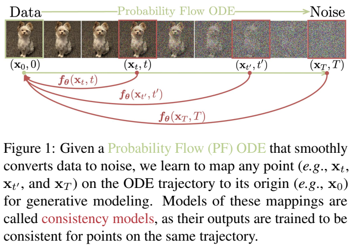
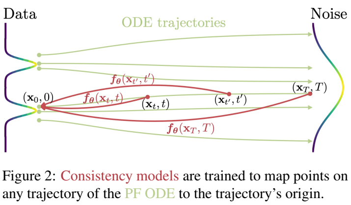
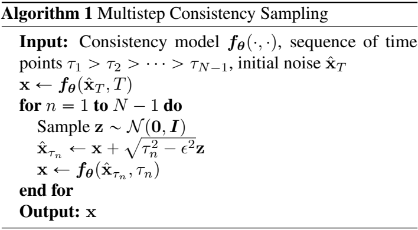
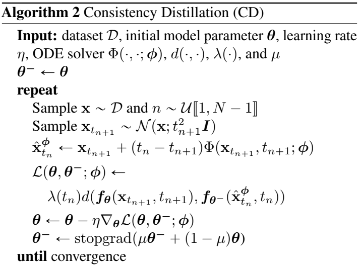
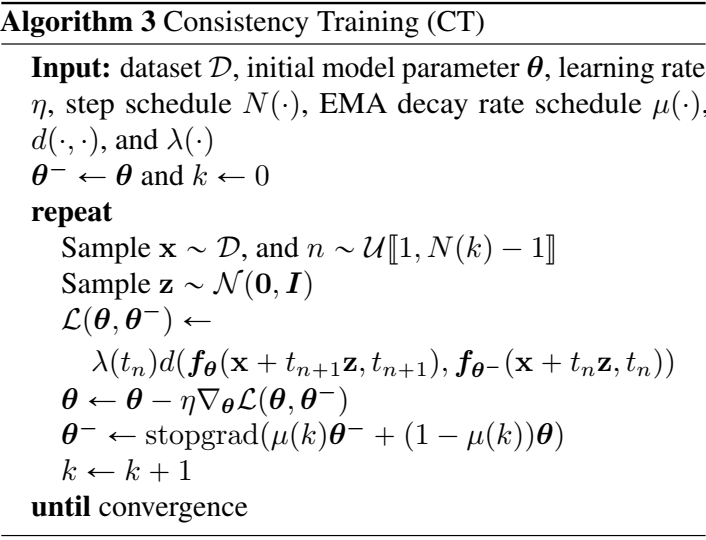
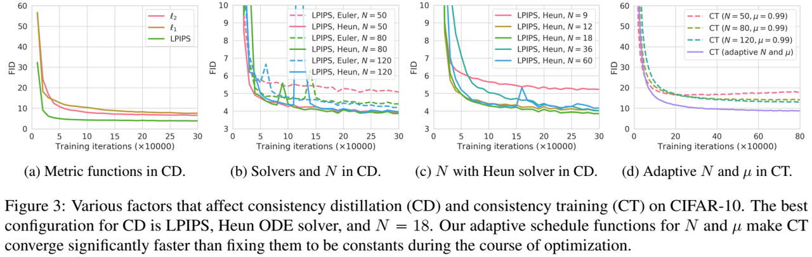
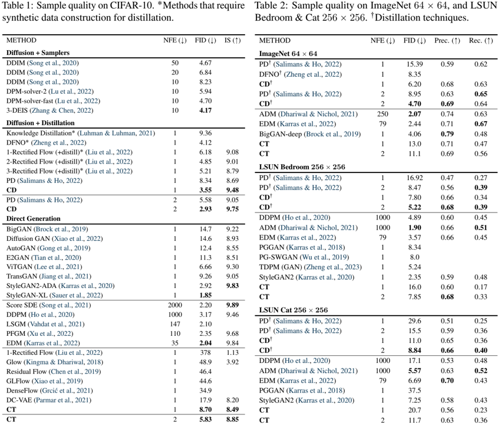
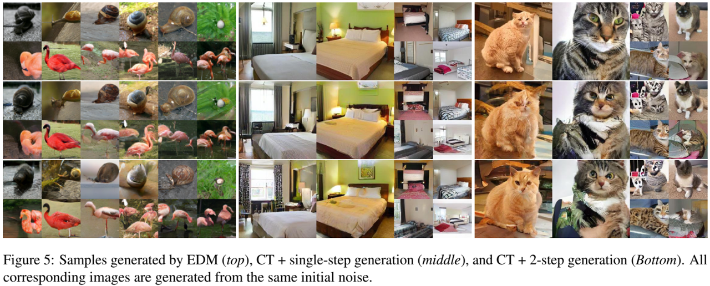
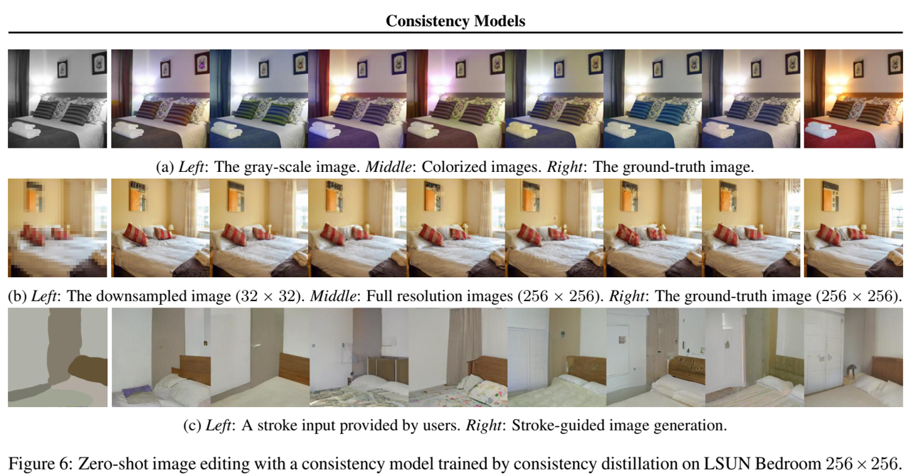

论文阅读八：一致性模型
摘要
虽然扩散模型在图像、音频和视频生成领域获得显著进展，但它们依赖于迭代采样过程，导致生成缓慢。为克服该限制，提出一致性模型。一致性模型直接映射噪声到数据，以生成高质量样本。通过设计，支持快速一步生成，同时允许多步采样，以平衡计算和采样质量。它们还支持零样本（zero-shot）数据编辑，例如图像恢复、着色和超分辨，而无需再这类任务上额外训练。一致性模型可以通过两种方式训练：（1）蒸馏预训练扩散模型，或者（2）作为独立生成模型。通过大量实验证明，它们优于现有扩散模型一步和几步采样的蒸馏技术，对于一步生成，获得CIFAR-10上3.55和ImageNet 上6.20的先进FID水平。当独立训练时，一致性模型成为一个新系列的生成模型，在诸如CIFAR-10、ImageNet64x64和LSUN 256x256标准基准上，优于现有的一步、非对抗生成模型。
如下图，数据通过概率流常微分方程（PF-ODE）转为噪声。在PF-ODE轨迹上的任意点 通过学习均可映射到原点。这些映射模型被称为一致性模型，它们的输出，经过训练，同一轨迹的点的是一致的。

引言
扩散模型，也称基于分数的生成模型，在多个领域获得前所未有的成功，包括图像生成、音频合成和视频生成。扩散模型的一个关键特征是迭代采样过程，渐进地移除随机初始向量的噪声。该迭代过程提供灵活的计算和采样质量平衡，通过使用额外的迭代计算通常生成更好的质量。它也是扩散模型的许多零样本数据编辑功能的关键，使它们能够解决从图像修复、着色、笔划引导图像编辑到计算机断层扫描和磁共振成像等具有挑战性的逆向问题。然而，对于单步生成模型，如GANs、VAEs或正则化流（normalizing flows），扩散模型的迭代生成过程通常需要10-2000次的样本生成计算，导致缓慢推理，并限制实时应用。
本文的目标是创建高效、单步生成模型，并且不牺牲迭代采样的重要优势，例如，当必要时权衡计算和采样质量，也能够执行零样本数据编辑任务。如图1所示，我们构建在连续时间扩散模型中的概率流常微分方程上，它的轨迹平滑地将数据分布转变为易于处理的噪声分布。我们提出学习一个模型，映射任意时间步上的任意点到轨迹的起点。我们模型一个值得注意的属性是自我一致性：同一轨迹上的点映射到同一初始点。因此，模型称为一致性模型。一致性模型允许我们通过一次网络评估（one network evaluation）转换随机噪声向量（ODE轨迹的终点，如图1中的 ）来生成数据样本（ODE轨迹的初始点，图1中的 ）。重要的是，通过改变一致性模型在多个时间步的输出，以更多的计算代价，可以改进样本质量，并且执行零样本数据编辑，类似于扩散模型中的迭代采样。
基于强制自我一致性属性，训练一致性模型提供了两种方法。（1）依赖于使用数值常微分求解器（numerical ODE solvers）和一个预训练扩散模型来生成PF ODE轨迹上的相邻点对。通过最小化这些点对的模型输出差异，可以有效蒸馏扩散模型为一致性模型，允许一次网络评估生成高质量的样本。相反，（2）无需预训练扩散模型，允许独立训练一致性模型。该方法将一致性模型视为独立生成模型系列。重要的是，两种方法都无需对抗训练，都对架构施加了最小限制，允许灵活使用神经网络来参数化一致性模型。
我们在若干图像数据集上证明了一致性网络的有效性，包括CIFAR-100、ImageNet 64x64和LSUN 256x256。经验上，我们观测到作为蒸馏方法，一致性模型在多种数据集上的一步生成优于现有扩散蒸馏方法，如渐进蒸馏。在CIFAR-10中，一致性模型达到新水平，一步生成和两步生成的FIDs分别为3.55和2.93；在ImageNet 64x64中，它取得破纪录的一步和两步网络评估的FIDs分别为6.20和4.70。当作为独立生成模型训练时，一致性模型可以匹配或超过来自渐进蒸馏的样本质量，尽管无需预训练扩散模型。它们还在多个数据集上优于许多GANs和现有的非对抗性、单步生成模型。此外，我们证明一致性模型可以用于执行广泛的零样本数据编辑任务，包括图像去噪、插值、恢复、着色、超分辨率和笔画引导图像编辑（SDEdit, stroke-guided image editing）。
扩散模型
一致性模型受连续时间扩散模型的高度启发。扩散模型通过高斯扰动渐进扰动数据到噪声，然后通过序列去噪步骤从噪声中创建样本。令 表示数据分布。扩散模型起始于用随机微分方程（SDE）扩散
其中， , T > 0是固定常量， 和 分别为漂移和扩散系数， 表示标准布朗运动。 的分布表示为 , 因此 。该SDE的一个显著性质是存在一个常微分方程（ODE），即概率流（PF）ODE，其在 t 处采样的解轨迹分布根据 为
这里， 是 的分数函数，因此扩散模型也称为基于分数的生成模型（score-based generative models）。
通常，方程（1）中的SDE被设计使得 为接近容易处理的高斯分布 。我们采用EDM中的设置，其中 , 。此时，我们得到 ，其中 表示卷积操作，且 。对于采样，首先通过分数匹配（score matching）训练分数模型 ，然后带入到方程（2）中获得PF ODE的经验估计，其采用如下形式：
方程（3）称为经验PF ODE。接着，采样 来初始化经验PF ODE，并用任意数值求解器，如Euler和Heun求解器，进行逆时间求解，以获得解轨迹 。结果 可以视为来自数据分布 的近似样本。为避免数值不稳定，通常在 停止求解器，其中， 是一个固定的小正数，并接受 作为近似样本。遵循EDM，我们将图像像素值调整到[-1,1]，并设置T = 80， 。
扩散模型的瓶颈在于缓慢的采样速度。显然，使用ODE求解器进行采样需要分数模型 的迭代估计，其计算成本高。现有快速采样方法包括快速数值求解器和蒸馏技术。然而，ODE求解器仍需超过10估计步骤来生成完整样本。大多数蒸馏方法，如Luhmanm，2021和Zheng等，2022，在蒸馏前依赖于收集来自扩散模型的大规模的样本数据集本身计算昂贵。据我们所知，唯一没有该缺点的蒸馏方法是渐进蒸馏（PD），我们在实验中将其与一致性模型大量对比。
一致性模型
一致性模型是一类核心设计支持单步生成的模型，同时仍允许迭代生成，以权衡采样质量和计算，和零样本数据编辑。一致性模型可以用蒸馏模式或独立模式进行训练。前者，一致性模型蒸馏预训练扩散模型的知识到单步采样器，显著改进其他蒸馏方法的样本质量，同时允许零样本图像编辑应用。后者，一致性模型独立训练，不依赖预训练扩散模型。这使它们成为一类独立的新生成模型。
以下介绍一致性模型的定义、参数化和采样，以及简单讨论其在零样本数据编辑上的应用。
定义 给定方程（2）中PF ODE的解轨迹 ，我们定义一致性函数为 。 一致性函数具有自我一致性的性质：对于属于同一PF ODE轨迹的任意对（x_t,t），其输出是一致的，即对于所有t, , 。如图2所示，一致性模型的目标，符号表示为 ,是通过学习强制一致性属性（详见章节4和5）从数据中估计该一致性函数 。类似的定义用于神经ODEs中神经流（neural flows）。然而，相较于神经流，我们不强制一致性模型是可逆的。
一致性模型经过训练，可以将PF ODE的任何轨迹上的点映射到轨迹的原点。

参数化 对于任意一致性模型 ，我们有 ，即 是恒等函数。该限制称为边界条件。所有一致性模型必须满足该边界条件，它在一致性模型的成功训练中至关重要。该边界条件也是一致性模型中最受限制的架构约束。对于基于深度神经网络的一致性模型，讨论两种几乎免费实现该边界条件的方式。假设有一个自由形式的深度圣经网络 ，其输出与x具有同样的维度。第一种方式是简单参数化一致性模型为：
第二种方法是使用跳跃连接（skip connections）参数化一致性模型，即
其中， 和 是可微函数，使得 ，和 。如此，如果 、 、 全部可微，一致性模型在 是可微的，这对于训练一致性模型至关重要（附录B.1和附录B.2）。方程（5）中的参数化与许多成功的扩散模型非常相似，使得它较为容易借助强大的扩散模型架构来构建一致性模型。因此，我们在所有实验中遵循第二种参数化。
采样 使用训练良好的一致性模型 ，我们可以通过从初始分布 中采样生成样本，然后评估 的一致性模型。这涉及仅一次一致性模型前向传播，因此一步生成样本。重要的是，可以通过交替地去噪和噪声注入步骤多次估计一致性模型来改进样本质量。在算法1中总结，该多部采样过程提供权衡计算和样本质量的灵活性。在实际操作中，我们使用贪婪算法在算法 1 中寻找时间点 ，即使用三元搜索法逐个精确定位时间点，以优化算法 1 所获样本的 FID。这假设给定之前的时间点，FID是下一个时间点的单峰函数。我们发现这一假设在我们的实验中是成立的，并将探索更好的策略作为未来的工作。
输入：一致性模型，时间点序列，初始噪声
过程：初始噪声和时间步传入一致性模型得到初步生成x, 通过采样高斯向量计算每步噪声量更新前一步生成的x，输入一致性模型获得更新后的再次生成。如此循环更新N-1次，获得最终的输出x。

零样本数据编辑 类似于扩散模型，一致性模型能够进行各种零样本数据编辑和操作应用，无需显示训练执行这些任务。例如，一致性模型定义来自高斯噪声向量到数据样本的一对一映射。类似于潜变量模型，如GANs、VAEs和归一化流，一致性模型可以通过便利潜在空间轻容在样本间插值（图11）。由于一致性模型训练用于从任意噪声输入 中恢复 ，其中 ，它们可以执行各种噪声水平的去噪（图12）。此外，算法1中的多步生成过程，通过类似于扩散模型的迭代替换过程，对于解决特定零样本逆向问题很有用。这使得图像编辑中的许多应用成为可能，包括恢复、着色、超分辨率和笔画引导的图像编辑。在第6.3节中，我们通过经验证明了一致性模型在许多零样本图像编辑任务中的威力。
通过蒸馏训练一致性模型
基于蒸馏预训练分数模型 训练一致性模型。讨论围绕方程（3）中的经验PF ODE展开，该方程是通过将分数模型 代入PF ODE中获得的。考虑将时间范围 离散化为N-1个子区间，边界为 。实际中，我们遵循EDM用公式 来确定边界，其中 = 7。当N足够大，我们可以通过运行一次离散步数值ODE求解器获得来自 的 的准确估计。该估计，表示为 ，定义为：
其中， 表示应用于经验PF ODE的一步ODE求解器的更新函数。例如，当使用Eluer求解器，有 ，其对应于如下更新规则：
为了简化，本文中仅考虑一步ODE求解器。将我们的框架推广到多步ODE求解器是很简单的，我们将其作为未来的工作。
由于方程（2）中的PF ODE和方程（1）中的SDE之间的联系（见第2节），可以通过首先采样 ，然后将高斯噪声添加到x来沿着ODE轨迹的分布进行采样。具体地，给定数据点x，可以通过从数据集采样x在PF ODE轨迹上高效生成一对相邻数据点 ，接着从 SDE 的转换密度采样 ，然后根据方程（6）使用一次离散步数值ODE求解器计算 。然而，通过最小化它在对 上的输出差异训练一致性模型。因此，我们提出了以下用于训练一致性模型的一致性蒸馏损失。
定义 1 一致性蒸馏损失定义为：
其中，期望值是相对于 ， 和 取的。这里， 表示 上的均匀分布， 是正加权函数， 由方程（6）给出， 表示优化过程中 历史值的连续平均值， 且 是度量函数，其满足 ，当且仅当 x = y时， 。
除非另外声明，我们采用定义1中的符号贯穿全文，并且使用 表示所有随机变量之上的期望。实验中，考虑平方 距离 、 \mathcal{l}_ 距离 和 学习感知图像补丁相似性（LPIPS, Learned Perceptual Image Patch Similarity）。我们发现， 在所有任务和数据集上执行良好。实际中，我们通过在随机梯度下降模型参数 最小化目标，同时用指数移动平均（EMA）更新 。即，给定衰减率 ，在每个优化步，我们执行如下更新：
上述训练过程总结在算法2。为符合深度强化学习（DQN、、DDPG）和基于动量的对比学习（BYOL、MoCo），我们称 为“目标网络”， 为“在线网络”。我们发现，与简单设置 相比，方程（8）中的EMA更新和“stopgrad”算子可以大大稳定训练过程，提高一致性模型的最终性能。
输入：数据集D，初始模型参数 ，学习率 ， ODE求解器 \Phi(\cdot,\codt;\phi) ， ， 和

下面，我们基于渐近分析为一致性蒸馏提供了理论依据。
定理 1 令 ， 且 为方程（3）中经验PF ODE的一致性函数。假设 满足李普希茨条件(Lipschitz condition)：存在 使得对于全部 ， x 和y，有 。进一步假设，对于所有 ，ODE求解器在 处调用时具有被 均匀界定的局部误差，其中 。那么，若 ，有
证明 该证明基于归纳法，与数值常微分方程求解器全局误差界的经典证明相似。我们在附录A.2中提供了完整的证明。
由于 是 历史值的连续平均值，当算法2的优化收敛时，有 。即，目标和在线一致性模型将最终相互匹配。如果一致性模型额外实现了零一致性蒸馏损失，那么定理1意味着，在某些规律性条件下，只要ODE求解器的步长足够小，估计的一致性模型就可以变得任意精确。重要的是，边界条件 排除了一致性模型训练中出现平凡解 。
一致性蒸馏损失 可以扩展为无限多个时间步 ，若 或 。由此产生的连续时间损失函数不需要指定N或时间步长 。尽管如此，它们涉及雅可比向量积，需要前向模式自动微分才能有效实现，这在一些深度学习框架中可能得不到很好的支持。我们在定理3至5中提供了这些连续时间蒸馏损失函数，并将细节放在附录B.1中。
独立训练一致性模型
一致性模型可以无需依赖任何预训练扩散模型进行训练。这与现有扩散模型技术不同，使得一致性模型称为新的独立系列的生成模型。
回顾一致性蒸馏中，依赖预训练分数模型 来近似真实分数函数 。事实证明，通过利用以下无偏估计量（附录A中的引理1），我们可以完全避免这种预训练的分数模型：
其中， 且 。即，给定x和 ，可以用 来估计 。
在 的极限下， 当使用Euler方法作为ODE求解器时，该无偏估计足够替换一致性蒸馏中的预训练扩散模型，由以下结果证明。
定理 2 令 。假设d和 均为有界二阶导数的二次连续可微，权重函数 是有界的，且 。进一步假设我们使用Euler求解器，且预训练分数模型匹配真实值，即 。那么：
其中，期望值根据 ， ，且 取得。一致性训练目标，表示为 ，定义为：
其中， 。此外，若 ， 。
证明 该证明基于泰勒级数展开和分数函数的性质（引理1）。附录A.3提供了完整的证明。
我们将方程（10）成为i一致性训练（CT）损失。至关重要的是， 仅取决于在线网络 \mathcal{f|_{\theta} 和目标网络 ，而与扩散模型参数 完全无关。损失函数 的下降速度比余数 慢，因此将在方程（9）中主导损失，当 ，且 。
为提高实际性能，我们提出在训练中根据调度函数 渐进增加N。直觉（参见图3d）是，当N很小（即 很大）时，一致性训练损失相对于基础一致性蒸馏损失（即方程（9）的左侧）具有较小的“方差”，但具有较大的“偏差”，这有助于在训练开始时更快地收敛。相反，当N很大时（即 很小），它有较大的“方差”，但较小的“偏差”，这在接近训练结束时是理想的。为了获得最佳性能，我们还发现，根据调度函数 ， 应该随着N的变化而变化。算法3提供了一致性训练的完整算法，附录C给出了我们实验中使用的调度函数。

类似于一致性蒸馏，一致性训练损失 可以扩展到连续时间（即 ），若 ，如定理6所示。该连续时间损失函数不需要N或 的调度函数，但需要前向模式自动微分进行高效实现。不同于离散时间CT损失，不存在与连续时间目标相关的不良“偏差”，因为我们在定理2中有效地取 。我们将更多细节放在附录B.2中。
实验
我们采用一致性蒸馏和一致性训练来学习真实图像数据集上的一致性模型，包括CIFAR-10（Krizhevsky等人，2009）、ImageNet 64ˆ64（Deng等人，2009年）、LSUN Bedroom 256ˆ; 256和LSUN Cat 256 \710 256（Yu等人，2015年）。根据Frechet Inception Distance（FID，Heusel等人（2017），越低越好）、Inception Score（is，Salimans等人（2016），越高越好）、Precision（Prec.，Kynka¨anniemi等人（2019），越高越好）和Recall（[Rec.，Kynka’anniemi等人（2019）](Improved precision and recall metric for assessing generative models)，越高越好）对结果进行比较。附录C中提供了其他实验细节。
训练一致性模型
我们在CIFAR-10上执行一系列实验来理解各种超参数对由一致性蒸馏（CD）和一致性训练（CT）训练的一致性模型的性能的影响。首先关注度量函数 、ODE求解器，和CD中的离散步N，然后研究调度函数 和 在CT中的影响。
为设置CD的实验，考虑：
度量函数：平方 距离 , 距离 ， 和学习感知图像补丁相似性（LPIPS）。
ODE求解器：比较Euler的前向方法和Heun的二阶方法，如EDM所述。
离散步N：对比 。
实验中，由CD训练的所有一致性模型均由相应的预训练扩散模型初始化，而由CT训练的模型则时随机初始化。
所图3a所示，CD的最优度量指标是LPIPS，在所有训练迭代中，其性能都大大优于 和 。这是意料之中的，因为一致性模型的输出是CIFAR-10上的图像，而LPIPS是专门为测量自然图像之间的相似性而设计的。接下来，我们研究哪种ODE求解器和哪种离散化步骤N对CD最有效。如图3b和3c所示，Heun ODE求解器和N=18是最佳选择。尽管我们正在训练一致性模型，而不是扩散模型，但两者都符合EDM的建议。此外，图3b显示，在相同的N下，Heun的二阶求解器的性能均匀优于Euler的一阶求解器。这与定理1相吻合，定理1指出，在相同的N下，由高阶ODE求解器训练的最优一致性模型具有较小的估计误差。图3c的结果还表明，一旦N足够大，CD的性能对N就变得不敏感。鉴于这些见解，除非另有说明，否则我们将在下文中使用LPIPS和Heun ODE求解器求解CD。对于CD中的N，我们遵循EDM中在CIFAR-10和ImageNet 64x64上的建议。我们在其他数据集上分别调整N（详见附录C）
由于CD和CT之间的紧密联系，本文中我们采用LPIPS进行CT实验。与CD不同，在CT中不需要使用Heun的二阶求解器，因为损失函数不依赖于任何特定的数值ODE求解器。如图3d所示，CT的收敛对N高度敏感——较小的N导致较快的收敛，但采样较差，而较大的N收敛较慢，但一旦收敛，样本较好。这与章节5中我们的分析一致，并促使我们实际选择逐步增加CT的N和µ，以平衡收敛速度和样本质量之间的权衡。如图3d所示，N和µ的自适应调度显著提高了CT的收敛速度和样本质量。在我们的实验中，我们针对不同分辨率的图像分别调整了 和 的调度，更多细节见附录C。

几步图像生成
蒸馏 在目前的文献中，与我们的一致性蒸馏（CD）最直接可比的方法是渐进蒸馏（PD，Salimans&Ho（2022））；到目前为止，这两种方法都是唯一在蒸馏前不构建合成数据的蒸馏方法。与之形成鲜明对比的是，其他蒸馏技术，如知识蒸馏和DFNO，必须通过昂贵的数值ODE/SDE求解器从扩散模型中生成大量样本来准备大型合成数据集。我们在CIFAR-10、ImageNet 64和LSUN 256上对PD和CD进行了全面比较，所有结果如图4所示。所有方法都是从我们内部预训练的EDM模型中提炼出来的。我们注意到，在所有采样迭代中，与Salimans&Ho（2022）的原始论文中的平方ℓ2距离相比，使用LPIPS度量可以均匀地提高PD。随着我们采取更多的采样步骤，PD和CD都有所改善。我们发现，在所有考虑的数据集、采样步骤和度量函数中，CD的性能均优于PD，但Vedriin 上的单步生成除外，其中ℓ2的CD性能略低于ℓ2的PD。如表1所示，CD甚至优于需要合成数据集构建的蒸馏方法，如知识蒸馏和DFNO。
直接生成 在表1和表2中，我们比较了一致性训练（CT）与使用一步和两步生成的其他生成模型的样本质量。我们还包括PD和CD结果以供参考。这两个表都报告了从ℓ2度量函数获得的PD结果，因为这是PD，Salimans&Ho（2022）原始论文中使用的默认设置。为了公平比较，我们确保PD和CD提取相同的EDM模型。在表1和表2中，我们观察到CT在CIFAR-10上的表现明显优于现有的单步、非对抗性生成模型，即VAE和归一化流。此外，CT在不依赖蒸馏的情况下实现了与PD一步样品相当的质量。在图5中，我们提供了EDM样本（顶部）、单步CT样本（中间）和两步CT样本（底部）。在附录E中，我们在图14至21中显示了CD和CT的其他样本。重要的是，从相同的初始噪声向量中获得的所有样本都具有显著的结构相似性，即使CT和EDM模型是彼此独立训练的。这表明CT不太可能像EDM那样遭受模式崩溃。


零样本图像编辑
与扩散模型类似，一致性模型允许通过修改算法1中的多步采样过程进行零样本图像编辑。我们使用一致性蒸馏在LSUN卧室数据集上训练的一致性模型证明了这一能力。在图6a中，我们展示了这种一致性模型可以在测试时对灰度卧室图像进行着色，即使它从未在着色任务上进行过训练。在图6b中，我们展示了相同的一致性模型可以从低分辨率输入生成高分辨率图像。在图6c中，我们还证明了它可以根据人类创建的笔划输入生成图像，就像扩散模型的SDEdit一样（Meng等人，2021）。同样，这种编辑功能是零样本，因为模型尚未在笔划输入上进行训练。在附录D中，我们还演示了零样本一致性模型在修复（图10）、插值（图11）和去噪（图12）方面的能力，以及更多关于彩色化（图8）、超分辨率（图9）和笔划引导图像生成（图13）的示例。

结论
我们引入了一致性模型，这是一种专门用于支持单步和少步生成的生成模型。我们已经实证证明，我们的一致性蒸馏方法在多个图像基准和小采样迭代上优于现有的扩散模型蒸馏技术。此外，作为一个独立的生成模型，一致性模型比现有的单步生成模型（GAN除外）生成更好的样本。与扩散模型类似，它们还允许零样本图像编辑应用，如修复、着色、超分辨率、去噪、插值和笔划引导图像生成。
此外，一致性模型与其他领域采用的技术有着惊人的相似之处，包括深度Q学习（Mnih等人，2015）和基于动量的对比学习（Grill等人，2020；He等人，2020）。这为这些不同领域的思想和方法的异花授粉提供了令人兴奋的前景。